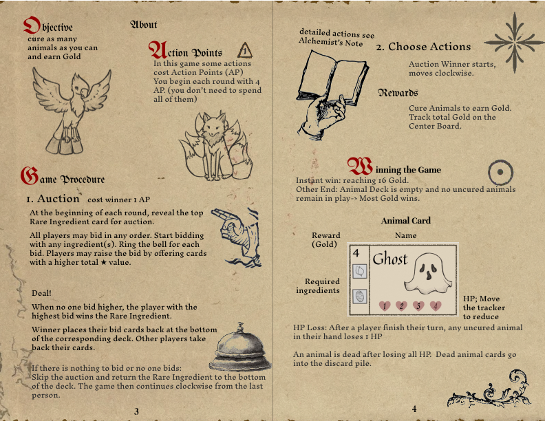
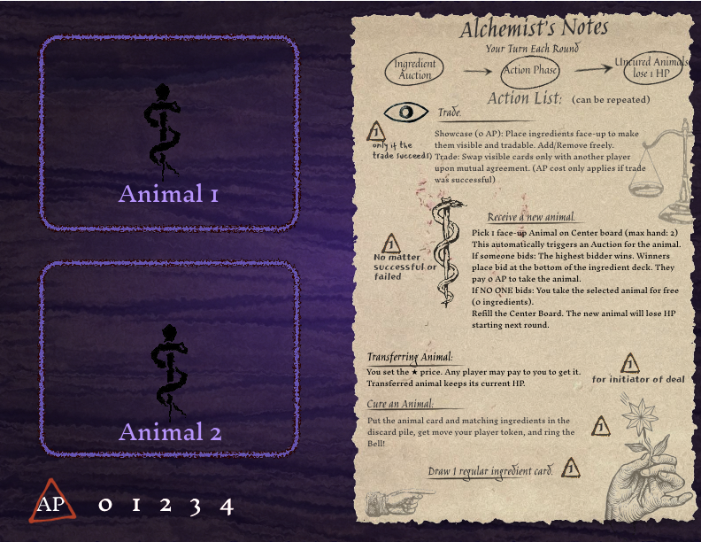
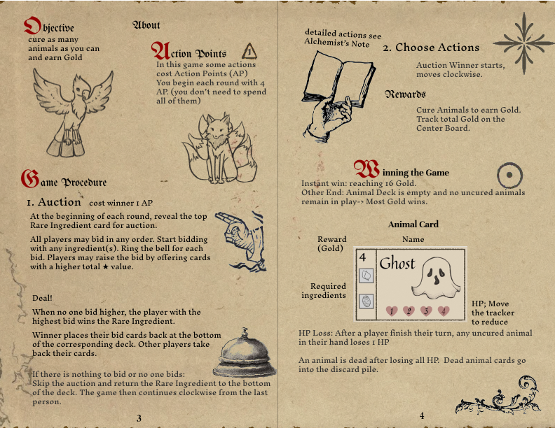
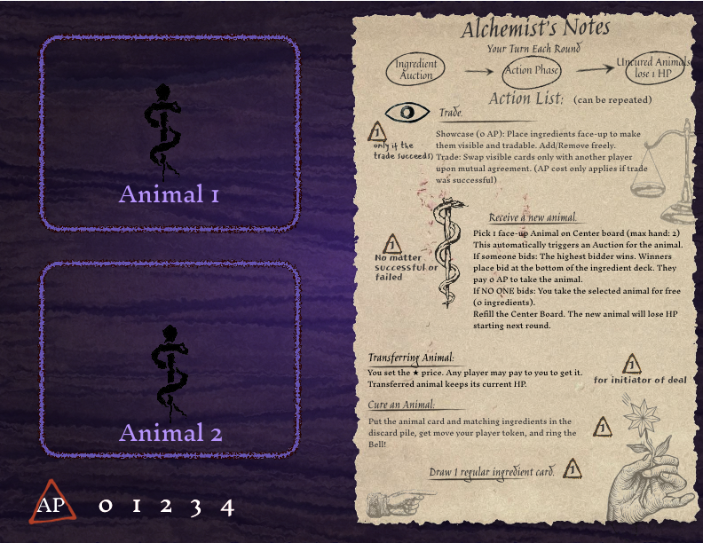

About
Hello! I'm Jiayi Pan, a gameplay and systems-focused engineer specializing in game prototyping, tools, and iterative system design.
Education
Sichuan University
GPA 3.92/4.0
University of Southern California
GPA 4.0/4.0
Publications
Blood Biomarker-Based Machine Learning Triaging Model for Predicting the Risk of Cognitive Decline Progression from Mild Cognitive Impairment
2025 IEEE 2nd International Conference on Deep Learning and Computer Vision (DLCV), Jinan, China, 2025, pp. 1–5.
This paper proposes a blood biomarker-based machine learning triaging model to predict the risk of cognitive decline progression from mild cognitive impairment (MCI).
Projects
Nudge (USC Games MFA Capstone)
Built robust gameplay systems focused on precision and player feedback. Implemented pixel-perfect colliders for all prefabs to ensure highly accurate physics interactions and collision detection.
Key Engineering Contributions
- Physics & Interaction: Generated pixel-perfect 2D colliders for all asset prefabs, ensuring precise gameplay mechanics.
- Tools Development: Developed a dedicated Screenshot Mode feature, allowing for high-resolution capture and camera control.
- Audio Systems: Integrated comprehensive audio functionality using FMOD, handling all SFX events and dynamic music playback.
LampLighter (GameJam)
A fast-paced GameJam project where I took ownership of the entire Audio and UI pipeline. Designed and implemented the Main Menu and Pause Menu systems for seamless navigation.
Key Contributions
- UI Systems: Built the complete Main Menu and Pause Menu interfaces, ensuring smooth transitions and clear player feedback.
- Audio Implementation: Curated and implemented the entire soundscape, including background music and gameplay SFX, creating an immersive atmosphere.
- Rapid Prototyping: Iterated on level pacing and feedback loops under tight GameJam time constraints.
SushiRat Revolution
A tabletop modification of the classic "Up The River" game. Designed collaboratively by a 4-person team, focusing on spatial blocking, risk management, and economy balancing.
Design Process
- Collaborative Design: Co-designed core rules and iterations with 3 other designers.
- Mechanic Balance: Adjusted the "risk vs. reward" curve to encourage player interaction and tactical blocking.
- Card System: Designed a diverse deck of action cards (shown on the right) to introduce variability and catch-up mechanics.
Hover to peek / Click to view
Monstory
A collaborative storytelling game using hidden prompts and constrained language mechanics to guide creativity. Balanced rules to keep stories coherent yet surprising.
Design Goals
- Encourage playful collaboration without dominating players
- Use constraints to spark creativity
- Keep sessions readable and emotionally paced
Untitled Alchemist Simulator
A high-stakes multilateral game driven by competitive auctions and resource trading. As the Lead Designer, I authored the complete rulebook and designed the core economic loops that force players to negotiate, bluff, and compete for limited ingredients.
Design Leadership
- Rule System: Wrote and iterated on the comprehensive rulebook, structuring complex multilateral interactions into clear, learnable phases.
- Economy Design: Designed the central auction mechanics and dynamic pricing models to encourage player interaction.
- Team Coordination: Collaborated with a team of 4 to playtest and balance the win conditions across multiple strategies.
 




More Projects (Ongoing)
I’m actively building new gameplay prototypes and tools. This section will be updated with more work soon.
Experience
Eastern Institute of Technology
Research Intern- Independently developed comprehensive control code (approx. 1000 lines) for a modular mechanical snake, programmed on Arduino Uno. Implemented motor twisting angles based on mechanical constraints to prevent exceeding operational limits.
- Successfully enabled sophisticated locomotion patterns, including forward movement, head lifting, and complex serpentine maneuvers, demonstrating a strong grasp of robotic kinematics.
- Participated in a burr detection project using both traditional computer vision (edge detection) and advanced deep learning models like YOLOv8 to identify surface defects.
- Contributed to data collection and annotation for training the YOLOv8 model, enhancing detection accuracy for intricate burr patterns.
Skills
Programming Languages
Game Development
Machine Learning
Tools & Platforms
Contact Me
I'm always open to discussing game design, engineering, or new opportunities.
Feel free to contact me!